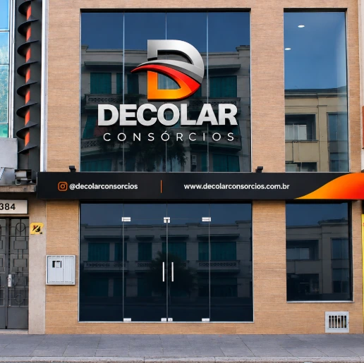
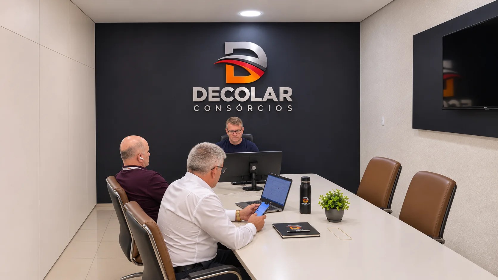

1988
Início da trajetória no mercado de consórcios
Primeiros passos no mercado de consórcios, construindo uma reputação baseada em transparência, relacionamento próximo e solidez técnica.
A Decolar Consórcios nasceu em 2007, em Porto Alegre, a partir de uma trajetória profissional iniciada em 1988. Nossa história reúne experiência no mercado, relacionamento próximo e compromisso com um planejamento financeiro responsável.

Uma história construída ao longo dos anos, marcada por experiência, desenvolvimento e novos caminhos.
Primeiros passos no mercado de consórcios, construindo uma reputação baseada em transparência, relacionamento próximo e solidez técnica.
Estruturação de operações comerciais, ampliação da carteira de clientes e liderança na capacitação de equipes especializadas.
Quase duas décadas de maturidade técnica no setor, estabelecendo alianças sólidas e aprofundando o modelo consultivo.
Criação da Decolar Consórcios em Porto Alegre, integrando décadas de experiência prática ao compromisso com planejamento financeiro responsável.
Registros visuais de reconstituição histórica em caráter ilustrativo.

Com sede de origem em Porto Alegre, a Decolar Consórcios desenvolveu sua atuação comercial por meio de uma rede de representantes, conectando clientes a soluções de planejamento e aquisição por consórcio.
Informações claras para decisões conscientes.
Atendimento consultivo e relacionamento humano.
Soluções alinhadas aos objetivos de cada cliente.
Conheça nossas soluções e encontre o próximo passo para seus objetivos.